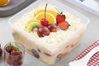

Salad Buah:
- Salad buah adalah campuran berbagai jenis macam buah yang dipotong-potong kemudian dicampur menjadi satu dan diberi dressing dengan mayonaise. Salad buah menjadi sangat diminati dan disukai banyak orang dibandingkan dengan salad sayur dikarenakan komposisi salad buah memiliki cita rasa yang lebih segar bila dibandingkan dengan salad sayur.
- Harga : Rp.12.000